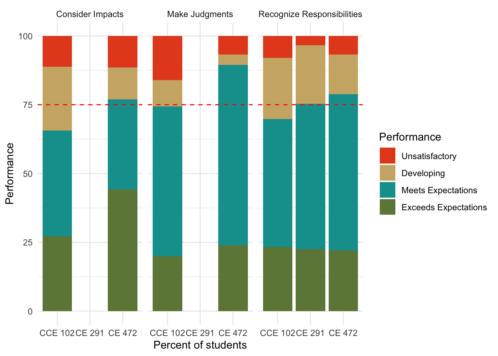
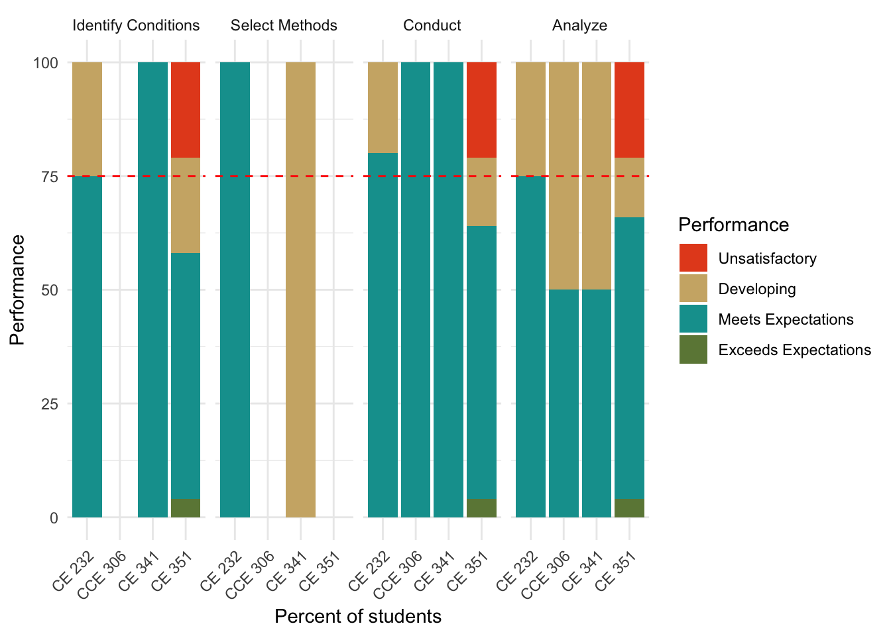

| Outcome | Winter | Sp/Su | Fall | Winter | Sp/Su | Fall | Winter | Sp/Su | Fall | Winter | Sp/Su |
|---|---|---|---|---|---|---|---|---|---|---|---|
| SO1: Complex Problems | A | E | C | ||||||||
| SO2: Design | A | A | E | C | |||||||
| SO3: Communications | A | E | C | ||||||||
| SO4: Ethics | Assess | Evaluate | Change | A | E | ||||||
| SO5: Teamwork | A | A | E | C | |||||||
| SO6: Experiments / Data | Assess | Evaluate | Change | A | E | ||||||
| SO7: Acquire Knowledge | A | A | E | C | |||||||
| ABET | |||||||||||
| ABET Schedule | Self-study | Visit | Response | ||||||||
2 Student Outcomes
The program assesses each of its seven student outcomes using performance indicators and associated rubrics.
2.1 Assessment Schedule
Each academic year, we assess and evaluate student learning outcomes based on the schedule in Table 2.1. This rolling three-year schedule allows us to assess each student outcome twice during a six-year ABET evaluation cycle.
We attempt to assess each student outcome three times:
- At an Introductory level, ideally in a 100- or 200-level classroom setting.
- At a Reinforcing level, ideally in a 200-or 300-level classroom setting.
- At an Evaluation level, as close to graduation as possible.
A matrix mapping each student outcome to the courses is shown in ?tbl-socourses.
CCE102
|
CCE103
|
Software
|
Measurements
|
CCE203
|
CE232
|
CCE270
|
CE291
|
Breadth
|
Design
|
Capstone
|
|
|---|---|---|---|---|---|---|---|---|---|---|---|
| 1. Complex problems | I | R | E | ||||||||
| 2. Design | R | E | |||||||||
| 3. Communication | I | R | E | ||||||||
| 4. Ethics | I | R | E | ||||||||
| 5. Teamwork | I | R | E | ||||||||
| 6. Experiments and data | R | R | E* | ||||||||
| 7. Acquire knowledge | I | R | E |
An ability to identify, formulate, and solve complex engineering problems by applying principles of engineering, science, and mathematics.
Performance Indicators
Assessment
An ability to apply engineering design to produce solutions that meet specified needs with consideration of public health, safety, and welfare as well as global, cultural, social, environmental, and economic factors.
Performance Indicators
Assessment
An ability to communicate effectively with a range of audiences.
Performance Indicators
Assessment
An ability to recognize ethical and professional responsibilities in engineering situations and make informed judgments, which must consider the impact of engineering solutions in global, economic, environmental, and societal contexts.
Performance Indicators
We evaluate this outcome based on three performance indicators. Students should:
- Recognize personal and professional responsibilities towards others including employees, clients, the wider profession, and the public.
- Recognize moral and ethical dilemmas in engineering situations and make judgments to identify appropriate resolutions.
- Consider the impacts of an engineering solution in global, economic, environmental, and societal contexts.
Rubric
| Indicator | Unsatisfactory | Developing | Meets Expectations | Exceeds expectations |
|---|---|---|---|---|
| Recognize responsibilities | Does not recognize or identify professional responsibilities. | Recognizes some professional responsibilities, but misses at least one. | Recognizes professional responsibilities towards all key stakeholders | Demonstrates interest in and motivation to serve society through the profession. |
| Make judgments | Does not identify ethical dilemmas, and or develops inappropriate resolutions | Misidentifies ethical dilemmas, and or develops inadequate resolutions. | Properly identifies ethical dilemmas and identifies appropriate resolutions. | Actively considers ethical challenges that may arise in professional contexts and seeks to mitigate them. |
| Consider impacts | Fails to identify impacts in any contexts. | Identifies impacts in some contexts, but fails to identify likely impacts in others. | Identifies likely impacts in a variety of contexts. | Actively seeks to consider the ethical impact of engineering situations in global, economic, environmental, and societal contexts. |
Assessment
We assess this learning outcome in three courses:
- CCE 102: Sustainable Infrastructure (Introductory)
- CE 291 R: Civil Engineering Seminar (Reinforcing)
- CE 472: Civil Engineering Capstone (Evaluation)
We evaluated this outcome most recently in Winter 2025. All graduating students take CE 472 in Winter semester. Students take CE 291 R each semester from their sophomore year onward. CCE 102 may be taken in Fall or Winter semesters, so this is approximately a 50% sample of the students in the program. CCE 102 also includes students who are in the CFM and the FM programs.
Figure 2.1 shows the share of students at each performance level for each indicator for each course, alongside the threshold of 75%. By taking CE 472, 75% of students meet the expectations for each indicator.

An ability to function effectively on a team whose members together provide leadership, create a collaborative and inclusive environment, establish goals, plan tasks, and meet objectives.
Performance Indicators
Assessment
An ability to develop and conduct appropriate experimentation, analyze and interpret data, and use engineering judgment to draw conclusions
Performance Indicators
We evaluate this outcome based on four performance indicators. Students should:
- Identify conditions: Identify what conditions need to be controlled or varied in an experiment in order to obtain data needed to test a hypothesis.
- Select methods: Select methods, materials, and/or equipment that will generate the desired data.
- Conduct: Conduct the experiment and keep appropriate records.
- Analyze and conclude: Analyze data using scientific techniques and draw supported conclusions.
Rubric
| Indicator | Unsatisfactory | Developing | Meets Expectations | Exceeds expectations |
|---|---|---|---|---|
| Identify conditions | Does not distinguish controls and variables; attempts multiple variables in one experiment | Identifies some controls and variables | Correctly identifies all controls and variables | Correctly identifies all controls and variables as well as possible confounding conditions |
| Select methods | Does not match methods to experiment | Selects some adequate methods, materials, or equipment | Selects adequate methods, materials, and equipment; can justify choice | Selects adequate methods, materials, and equipment; can justify choice; may use standards |
| Conduct | Careless setup or execution of experiment; little or no recordkeeping; inattentive to experiment | Some problems in setup or execution; keeps some records | Carefully sets up and executes experiment; records include photos, notes, observations, and potential errors | Carefully sets up and executes experiment; records include photos, notes, observations, and potential errors or limitations |
| Analyze and conclude | Little or no analysis of data; incorrect analysis of data; no conclusion; concludes without data; concludes contradictory to data | Shows some analysis by figures, equations, statistics, etc., though perhaps with mistakes; may conclude without data or contradictory to data | Demonstrates thorough analysis by figures, equations, statistics, etc.; concludes based on data and in accordance with data; recognizes assumptions | Demonstrates thorough analysis by figures, equations, statistics, etc.; concludes based on data and in accordance with data; recognizes assumptions; acknowledges civil engineering applications of results |
Assessment
We assess this learning outcome at three levels
- CCE 270: Computer Methods (Introductory)
- CE 232: Fluid Mechanics (Reinforcing)
- CE Breadth classes (Evaluation):
- CCE 306: Civil Engineering Materials
- CE 341: Soil Mechanics
- CE 351: Environmental Engineering
All CE students must take one of the three breadth classes where we assess this outcome, though many will take more than one. We evaluated this outcome most recently in Winter 2025.

An ability to acquire and apply new knowledge as needed, using appropriate learning strategies.